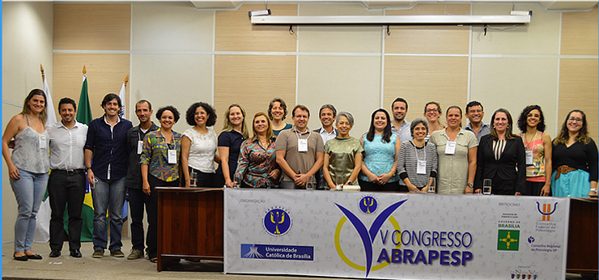
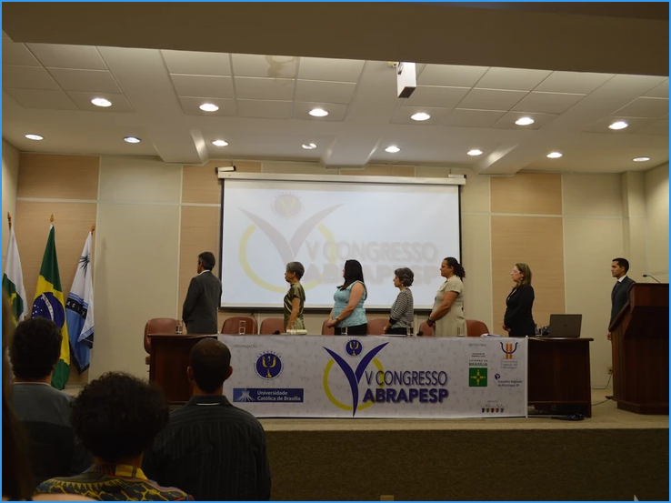

O V Congresso da ABRAPESP abriu os trabalhos com a oferta de 11 minicursos ministrados por 18 profissionais e professores especialistas na área. Nesta edição foi testado um novo modelo: a organização disponibilizou 40 vagas, por minicurso, que poderiam receber inscrições independente da matrícula para o congresso, que só poderia receber 150 pessoas no espaço da Universidade Católica de Brasília. Deu certo! Foram 241 inscritos no evento.

Entre os participantes 32% é do Distrito Federal e 68% representam outros Estados. São eles do: Rio de Janeiro, São Paulo, Rio Grande do Sul, Santa Catarina, Paraná, Minas Gerais, Piauí, Pernambuco, Ceará, Pará e Amazonas.

Quanto a formação, 98 são estudantes de graduação e 143 profissionais principalmente das áreas de Educação Física e Psicologia.